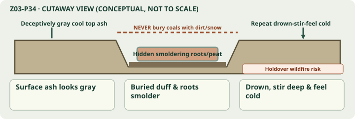

Z03-P34 · Fire and ignition · New manuscript
Detect underground root, duff and peat fires hidden beneath ash or snow
Prevent holdover wildfires that smolder unseen underground for hours or days after surface flames disappear.
When it applies · Forested sites, boreal/peat soils, winter snow-covered forest floors and any extinguished campfire check.
Equipment · Abundant extinguishing water, sturdy stirring tool and bare-hand radiant heat check (without touching hot embers).

Actions
- Recognize that tree roots, deep pine duff and peat bogs hold oxygen and dry organic fuel below the surface—a fire built over duff or snow can burn downward unseen even after top ash looks gray.[C14, C04]
- Never bury a campfire solely with dirt or snow to put it out; burying insulates hot coals and roots so they continue smoldering underground and re-emerge in later wind.[C04, C14]
- Drown thoroughly with water, stir deep into the wet ash slurry, probe ring edges for buried steaming roots and repeat until every spot feels completely cool without wisps of steam or smoke.[C04, C14]
Failure recognition · Shoveling dry sand or snow over glowing coals at checkout, leaving a buried root fire that flares into a wildfire two days later.[C04, C14]
Verify · Pass the back of your hand close above the stirred wet ash and perimeter soil—confirm zero warmth, hissing or smoke anywhere.[C04, ED]
Stop or change course · If smoking soil or burning roots persist beneath a fire site despite watering, keep dousing if safe or report an active ground fire immediately to land managers or 911.[C04, C14, T02]
Evidence and editorial notes
- C04 · USDA Forest Service / Smokey Bear · Smokey Bear’s Campfire Safety Guide (agency PDF)
- Section: Maintain and extinguish a campfire · Conditions: Occupied campfire, water and tools available
Support: Stay with the fire. Drown, stir and add water again until cool. Leaving visible embers or merely covering them is unsafe.
Limitations: Deep duff or peat soils can hold smoldering embers underground even after surface ash cools. · Conflicting evidence: None; prohibits dirt-only burial as primary extinguishment.
Editorial note: Enforces drown-stir-feel-cold cycle before site departure. · Specialist reviewer: Fire prevention and land management
Primary source · checked 2026-11-24 - C14 · USDA Forest Service · Know Before You Go: Fire (current web edition)
- Section: Know Before You Go > Extinguish and Site Clearance · Conditions: Authorized outdoor campfire on mineral soil
Support: Clear flammable grass, needles, and twigs down to mineral soil before building a small fire, keep flames away from overhanging branches, and confirm cold ash before leaving.
Limitations: Root systems and organic duff beneath shallow clearing can ignite invisibly. · Conflicting evidence: None; aligns with SMOKEY C02/C04.
Editorial note: Underpins mineral-soil cutaway and underground root-fire failure cards. · Specialist reviewer: Wildland fire prevention
Primary source · checked 2026-11-24 - T02 · American Red Cross · First Aid Steps (current web edition)
- Section: First Aid Steps > Call 9-1-1 · Conditions: Lay emergency response to unresponsiveness, abnormal breathing or severe bleeding
Support: Activate EMS and get needed equipment. Follow dispatcher directions and act within training.
Limitations: Remote locations may delay EMS arrival, requiring sustained stabilization after activation. · Conflicting evidence: None; aligns with NPS-E.
Editorial note: Mandates early emergency activation and dispatcher adherence. · Specialist reviewer: EMS and wilderness medicine
Primary source · checked 2026-11-24
Source lineage · USFS campfire safety and Smokey Bear guide; new manuscript · Classification · New manuscript.